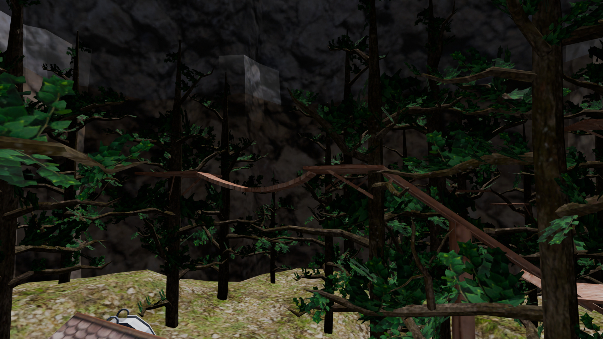
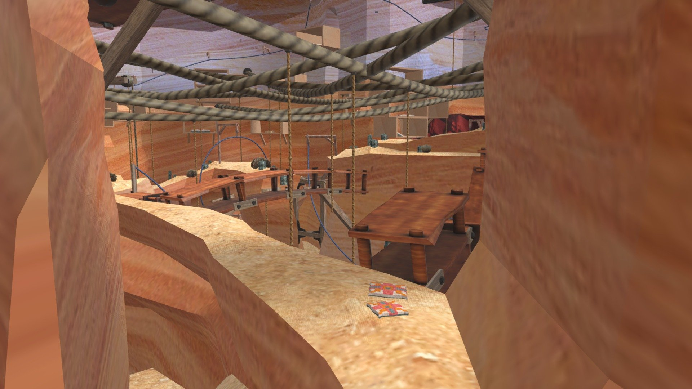

日本人向けゴリラタグウィキ
！注意！ このウィキは正しくない情報がある可能性があります
マップについて！
マップには今(2025年10月13日)20種類あります
有名なマップから紹介していきます
フォレスト FOREST
フォレストという場所はこのサイトの背景になっている場所でゴリラタグで最初に来ることになるマップです
ここには木が生い茂っており非常に練習に向いています。
壁ジャンプを練習するためにある木の板もあるため初心者にもやさしいところです
キャニオン CANYON
キャニオンという場所は砂漠みたいな見た目をしていて高低差が激しいです
主に上と下で分かれていて、上の場所では基本的に開けていて縄で移動が可能です
下の場所ではアスレチックができるオブジェクトがたくさんあります。
キャニオンやこの後紹介するビーチなどのマップには縄というものがあり、グリップボタンを押すことでつかめます。
そして勢いをつけてつかむと物理演算がうごいてぶらんぶらんします。
シティ CITY
シティという場所は主に買い物をするゴリラストアというところがメインです。
そのほかの用途はアイテムを身に着けたり、モンケビッズというナンバーバッチの数値を上げるなどです。
ケーブ CAVE

ケーブという場所では主に二つのエリアに分かれています。そのうちの一つはフォレストにあるでかい切り株の中
にある穴を通ってまっすぐにあるところです。そのエリアには音のなる鉱石やでかい鉱石など様々な鉱石があります。
そしてその中でも特徴的なものはコウモリです。グリップボタンでつかめることができ、つかんだら羽を閉じて丸まります。